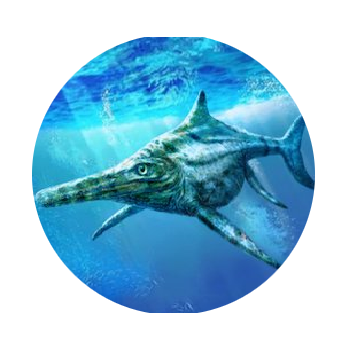

Os maiores misteiros dos rios e oceanos, trazendo criaturas que ja assomobraram esses rios e mares do nósso planeta, acompanhe tudo aqui no misteiro dos oceanos
O oceano e seus Misterios
Ha uma frase muito dita por pesquisadores atraves do mundo, essa frase diz "O ser humano conhece mais sobre os planetas que ja visitou do que os mares que o habitam". Pode at� parecer loucura m�s em todo nosso tempo de existencia a humanidade� conseguio explorar e investigar 5% de todo mar do mundo, os outros 95% continuam sendo um misterio para todos n�s. Mas uma coisa que sabemos � que existiram criaturas na antiguidade que tocavam o terror dentro dos sete mares ficando sempre no topo da cadeia alimentar. Vamos fala um pouco sobre 3 criaturas muito temidas da antiguidade, m�s que hoje n�o existem mais.
Megalodon, conhecida por uma mordida mortal, o tubar�o branco gigante chamado de Megalondon, tinha medidas que ultrapassavam a de um onibus, grandes fontes historicas afirmam que esse famoso tubrar�o foi morto pela falta de alimento apos os meteoros que atingram os dinossauros.
Titanoboa, a Titanoboa era uma cobra aquatica que vivia em regi�es da america do sul, principalmente na colombia, seu tamanho podia chegar at� 14,6 e pesar 1 tonelada, era de f�to um dos mairoes animais que ja viveram durante a pr�-historia. A historia diz que a titanoboa foi extinta pelas mudan�as de temperatura que na �poca era algo que afetava o mundo animal rigorosamente.

Ictiossauro, Com cerca de 3 metros de altura e 26 de comprimento, Ictiossauro foi um animal que viveu no periodo pós extin�a� dos dinossauros, acredita-se que ele era o animal marinho mais rapido que ja teve na �poca sendo mais rapido que os tubaro�es que assombraram aqueles mares, pela historia sua extin��o veio por causa das mun�as climaticas da terra que afetaram as temperatura do mar causando assim sua extin��o.
CONSIENTIZA��O � PARA TODOS
Procure sempre compartilhar para as outras pessoas sobre a preserva��o da natureza, cientistas disseram a muito tempo atr�s que se o mundo continiu��o com essa
polui��o a camada de ozonio do n�sso planeta iria ser afetada drasticamente causando mundan�as climaticas graves para a terra, ent�o � importante que as pessoas
tenham no��o desse fato porque as mudan��s climaticas impacatam n�o s� n�s humanos como os animais tambem, podendo assim causar a extin��o de muitos animais
tanto marinhos quanto terrestres.